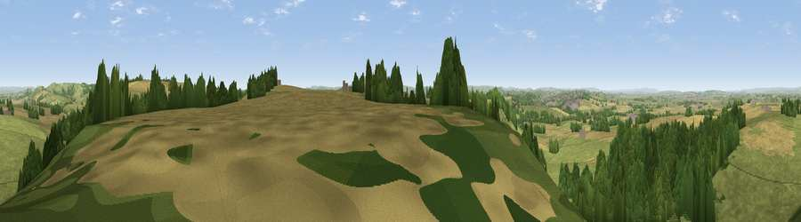

Viewpoint near Trent
#8482 in England · top 12% of its area beats it · near TrentThe view, rendered

A 360° render of this exact spot computed from the terrain model, tree cover and land cover — summer colours, afternoon light, calibrated against photographs of famous viewpoints. Real trees, hedges and buildings will differ in detail.
The panorama
Grey silhouette: terrain skyline in each direction (720 bearings, Earth curvature and refraction included). Dashed green: skyline with trees (+15 m) and buildings (+8 m) as obstacles. Blue strip: how far the ground is visible on each bearing.
Where the view opens
Wedge length = distance to the farthest visible ground on that bearing (vegetation-aware). Rings at 10, 25 and 50 km.
What fills the view
50% grassland · 25% woodland · 24% cropland · 1% built-up
Angular shares of the visible panorama (visual magnitude), not map area. Landscape diversity 0.47 (0–1 Shannon).
Key numbers
More beautiful places nearby
The staircase of upgrades: each row has a higher view potential than everything closer. Driving times are estimates from straight-line distance, calibrated against real road routing — check an actual route before setting out.
| Place | Direction | Drive | Score |
|---|---|---|---|
| Viewpoint near Nether Compton | S · 1 km | ~2 min | 67.8 |
| Round Hill | ENE · 1 km | ~4 min | 70.4 |
| The Beacon | NNE · 5 km | ~12 min | 75.8 |
| Viewpoint near Lamyatt | NNE · 18 km | ~31 min | 77.8 |
| Viewpoint near Hewish | WSW · 22 km | ~37 min | 78.5 |
| Lewesdon Hill | SW · 25 km | ~40 min | 83.3 |
| Beacon Knap | SSW · 32 km | ~49 min | 84.8 |
| The Knoll | SSW · 32 km | ~49 min | 91.0 |
50.96517, -2.55425 · source: screening · position refined by local search. Computed location — check access rights before visiting.